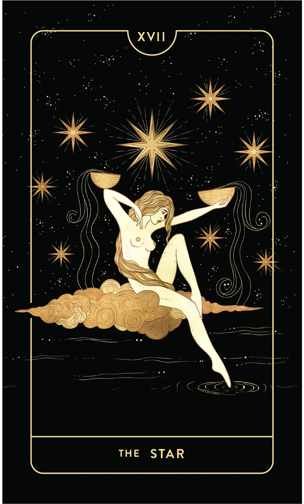

Корт де Гебелиний 1781 онд Ле Мондэ Примитиф номд бичсэн нь Таро хөзрүүд нь эртний Египетийн "Тотын судар" номоос гаралтай гэсэн онолыг дэвшүүлжээ. Тот бол эртний хаадын нэг, дүр бичгийн системийг зохион бүтээгч гэгддэг Египетийн бурхан юм.
Корт де Гебелиний 1781 онд Ле Мондэ Примитиф номд бичсэн нь Таро хөзрүүд нь эртний Египетийн "Тотын судар" номоос гаралтай гэсэн онолыг дэвшүүлжээ. Тот бол эртний хаадын нэг, дүр бичгийн системийг зохион бүтээгч гэгддэг Египетийн бурхан юм.

Таро хөзрийн мэргийн тайлал нь хөзөр тус бүрийн зөгнөсөн утгыг төдийгүй хоёр ба түүнээс дээш тооны хөзөр хоорондоо ойрхон байгаа эсэх, эсвэл хөзөр доошоо юмуу дээшээ харсан байгаа зэргийг (энэ нь хөзрийн утгыг сулруулах, саатуулах, бүр эсрэг утгатай болгох нөлөөтэй) харгалзан үздэг.
 22 Их Аркана хөзрийн тус бүрийн товч тайлбарын гарчиг нь мэргэчийн илэрхийлэхийг зорьж буй 5 илүү өргөн, гүнзгий утгыг илэрхийлэх түлхэц болж өгдөг.
22 Их Аркана хөзрийн тус бүрийн товч тайлбарын гарчиг нь мэргэчийн илэрхийлэхийг зорьж буй 5 илүү өргөн, гүнзгий утгыг илэрхийлэх түлхэц болж өгдөг.